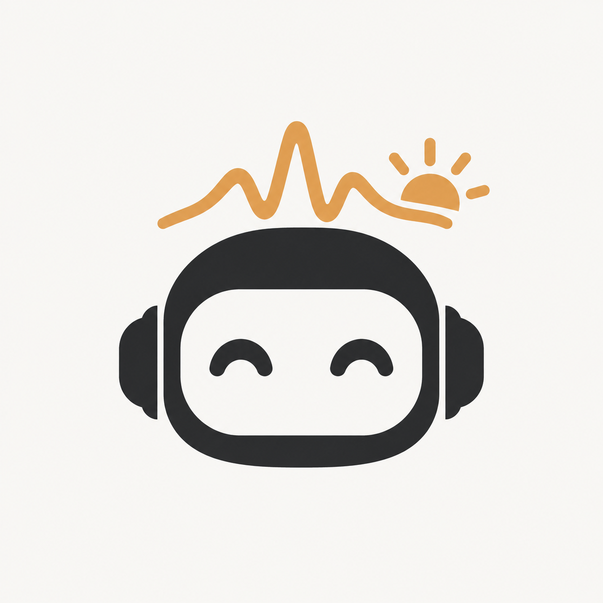

重要来源先看
读取公开 RSS／Atom、网页列表和政府数据接口。政策官网优先；arXiv 从论文 Atom 记录获取版本信息。
例如：中国政府网、教育部、BCIwiki、IT之家、企业官网、arXiv。Brainsong Today 追踪消费级脑机／脑电、耳机与眼镜形态，以及教育、睡眠、情绪场景；从公开信源发现消息，筛出值得读的内容，送到飞书群。

前端广泛发现，后端逐层收紧。合格内容不足时少发，不用无关资讯凑数。
盯住重要网站，同时用全网搜索补足小公司、新产品与未进入固定信源的报道。
读取公开 RSS／Atom、网页列表和政府数据接口。政策官网优先；arXiv 从论文 Atom 记录获取版本信息。
例如：中国政府网、教育部、BCIwiki、IT之家、企业官网、arXiv。文章列表读不稳时，限定官网域名搜索。8 个网站分两组，每天换另一组；不足时才扩大搜索时间范围。
包括科技日报、科普中国、DeepTech、36氪、国家药监局和企业官网。每个方向取 4 个固定高权重词 + 1 个每日轮换词；使用词表中的完整查询，包含同义词。仅完全相同的查询复用结果。
核心、耳机教育、企业、资本、政策、眼镜可穿戴；学术另走 arXiv。先保存标题、摘要、链接、信源和可取得的日期，不让一次分析失败抹掉有价值的线索。
规范链接和标题，把相同文章、同一事件的报道尽早归拢；来源多并不等于多条简报。
已发送记录用于跨天避重；候选只在当前内容窗口里等待补充和递补，不让旧闻覆盖今天的新消息。
搜索的“近一天／近一周”只是召回范围；最终是否进入简报，以程序核实的近 3 个自然日为准。
关键词负责发现，不直接决定推送。真正入选还要有可读证据，并能说明与我们的产品和决策有什么联系。
词典、招聘、股吧、聚合页及无关“AI”消息先排除。普通教育新闻要与耳机、脑电或具体应用结合。
政策只看中国国内的全国与地方政策。GLM-5.3-Flash 读取证据，判断接受与否、相关度、类别、主体和来源性质；加权相关度至少 60，且不能覆盖 AI 明确拒绝。
行业、资本、政策加权 1.2；学术 1.0。与情绪识别无关的脑电论文轻微降权。按政策 → 行业 → 资本 → 学术安排分析；基础预算 48 条，未满 7 条时继续处理可用候选。
同一来源软限额 25%；需要证据时才进一步读正文，避免全量逐页抓取。新消息优先争取入围；最终推荐顺序则让权威、知名且与业务高度相关的来源排在前面。
当天 1.0，前一／前二天 0.8。先看近期合格内容；每类、每家企业有软分布约束，避免单一方向占满候选池。
来源系数 = 权威性 70% + 知名度 30%。两轮独立计算，分类加成不会反复相乘；推荐分换算为可带半星的 5 星制。
每类先确定较新的合格消息；名额不足再由近 3 日内较旧的内容递补。
每类最多 3 条，学术最多 2 条；同一家企业最多 2 条。
摘要失败时，仅有链接且其他门槛都合格的候选可最后递补；不会挤掉完整摘要。
每条都有信息类型、事件主体、日期或“近期”、标签、推荐指数、摘要、来源和原文入口。
该企业推出可日常佩戴的脑电眼镜，并开放脑电信号接口，便于在专注力场景中使用。
原文 ↗简报是最终交付，运行日志只用于排查，不会混入群消息正文。
GitHub Actions 在北京时间 06:00—12:00 每 10 分钟设置触发点；平台可能延迟，成功后同日跳过后续采集。
SQLite 保存候选、分析缓存、已发送指纹和发送状态；在运行之间通过 GitHub 构建产物恢复。
简报预览、信源日期统计、AI 调用情况和失败日志分别保存。智谱密钥与飞书 Webhook 由 GitHub Secrets 提供。